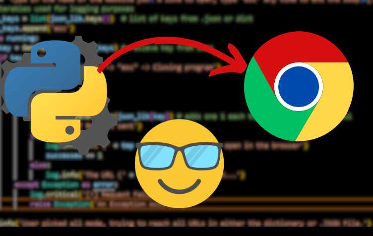

If you’re anything like me, you spend most of your day on the Internet whether it be for school, work, or for leisure. Additionally, most of the time we do spend on the Internet in a Desktop environment is generally spent in a Web Browser which we use to access the same handful of websites. In order to visit these websites, we are required to enter in the associated uniform resource locator or URL which is then processed by the Domain Name System which maps the URL to a tangible IP address. This process can become quite tedious and time-consuming especially if you’re someone like me who visits and uses multiple websites on a daily basis. However, we can reduce this menial task to a few keystrokes by using the simple and flexible Python script I’ve created.
Now that we've established the use cases for my script, let's talk about it's features. The program I’ve created to put it simply, automatically opens a configurable set of bookmarks from either a JSON file or the program's built-in dictionary. Now I made the choice to support both to provide as much flexibility for those who choose to use the script themselves. Furthermore, I have also included thorough error checking to ensure the program doesn’t implode on itself after either an accidental typo or misconfiguration. If you’d like to try the program yourself, attached below is a URL that takes you to the GitHub Page for it. However, before you try to use it yourself, please take a look at the “Read Me” section below to ensure you have installed all the dependencies and third-party modules used by the script.
The script I've created uses several built-in and third-party Python Modules in order to function properly. Before trying to run the program, make sure that you not only have Python 3.12 installed but also all of the required modules installed on your system which I have listed below.
The first and most important module that is used to perform the core logic of the program is the webbrowser module which should already be installed in most modern versions of Python. This module gives us the ability to both launch and control the default browser configured on a system. I primarily use the webbrowsers open() function to launch URLs after sending an HTTP request and checking the response status code.
Secondly, this program also uses the sys module which should come pre-installed with Python which gives access to system-specific parameters and functions. The sys module also allows us to gracefully exit the program with the sys.exit() function.
This script also utilizes the Requests module which you’ll most likely have to install which is used to send HTTP get requests. I opted to use this module as it abstracts all of the complexities of sending HTTP get requests which is used to determine if a URL is reachable before we try to open it in a browser.
Additionally, my script also uses Python's built-in logging framework to provide a flexible and clean way of logging each action performed by the script in different severity levels. I opted to automatically create a logging directory in the programs folder as soon as the program runs for the first time to help organize the program’s logs. Every time the program runs, the previous program logs will be overwritten by default as I assume most users will not be utilizing this feature. As such it can be assumed most users wouldn’t like additional logs to be created each time the program runs, which will take up memory.
Another built-in Python module our script will use is the built-in OS module which contains a variety of cross-platform wrappers for interacting with the operating system and file system. In my script it's to check if folders exist, list files in a directory and ensure our program always runs in the directory it's located in.
Considering most of the flexibility offered by the program comes from the support of custom JSON presets, we will be using the JSON module to interact with user presets which should come pre-installed with Python. Now the reason why I opted to use and support JSON configurations is due to JSON files being the most ubiquitous format for serialized data, configuration, and API transport on the web.
The last module utilized by this script is the re module which allows us to create regular expressions which is solely used for validating input for file names.
NOTE: In order for the script to work properly, you must have a 'logs' and 'presets' directory where the .py file is located. The program should do this for you and create these directories automatically whenever it runs for the first time however if any issues do occur, manually create these directories yourself.
Now that we’ve established the all of the scripts dependencies, let’s take a look at the code itself. Now if you’d like a more detailed explanation of the code, check out the YouTube video I made about the source code which provides a more thorough explanation of the more technical aspects of the program.
Anytime you create a program or script the best approach during development is to seperate the tasks your program will perform into functions or methods. This approach makes it a lot easier to solve each task individually allowing you to test and debug each individually task during development. Additionally, for smaller programs and scripts, it's almost always better to have a series of static functions or methods that do the heavy lifting that are not tied to either an object or class instance. With this in mind, let’s now take a look at each of the scripts functions and describe the tasks or problems they solve in the main routine.
The first function our script needs is one that'll first and foremost check user input and secondly provide a descriptive prompt listing accepted inputs whenever our input validation fails. We can achieve this relatively easily by with recursion in a function we’ll call ‘GetInput’ that takes 2 parameter. The first parameter will be a prompt of what we want from the user and our second one will be a list of accepted inputs or options. If the user provides input that is not present in our list of options we'll make a recursive call back to the function until valid input is recieved which guarntees we always recieve valid input from the user.
The second and most obvious task we’ll need our script needs to perform is opening a URL in the users browser which we’ll either get from our program's dictionary or JSON file. This function which we’ll call OpenBrowser will take a single parameter which is the URL we want to open, and we’ll use it to supply the url parameter in the webbroswers open function. Before we can do this we need to be certain that the URL is reachable first by sending a HTTP get request which we’ll then attempt to raise for status. If no exceptions are raised during this process, we'll then check the response objects status code attribute for a value of 200; meaning the URL is reachable allowing us to safely open the URL in the browser. Considering raising a HTTP response for status has the potential to raise an exception, we'll throw our code in a Try Block to avoid the program crashing from a singular invalid URL. If any exceptions are raised or the status code suggests the URL is unreachable, we will return false otherwise we'll return true to signal that the URL was successfully processed.
In order to support JSON compatibility and custom user presets, we’ll need to extract a JSON file's contents into a dictionary in order work with the JSON files data. To do this let's create a function we'll call ‘LoadPreset’ which will take a single parameter; the JSON files name. Now that we know the name of file we want to parse we can attempt to open it and extract its contents into a dictionary. In order to prevent empty presets from being used and to prevent an exception being raised later in our program when we attempt to process the dictionary we'll check if the we've extracted dictionary is empty. If the dictionary isn't empty we can safely return it to the main routine for further processing. Lastly, to ensure that no errors occur during this process we’ll throw the code into a try block and exit the program if any exceptions occur with sys. exit() to ensure the program exits before it inevitably crashes later. Now that we have everything we need to process user requests, let’s write the core logic of our program in the next section.
Considering we want our program to be as flexible and approachable as possible in the main routine before processing any requests we’ll ask our users if they’d like to open all URLs at once or select the URLs individually. We can then take this input and throw it into a function we’ll call ‘DetermineMode’ taking the input and returning true if they selected the all mode and false if they opted for select mode.
We’ll use the boolean returned from DetrmineMode to determine what our program should do next in our next function which we'll call ParseLib. This function will take 2 parameters those being the dictionary of URLs we've extracted from a JSON file and the boolean returned from DetermineMode. dictionary we either extracted from a JSON or got from our built-in dictionary and the second being the Boolean returned With the value of our Boolean parameter, we can make a simple if else block to detect the mode our user opted for.
If our user opts for select mode, we’ll start a while loop and ask our user to enter a value from the list of keys from the dictionary parameter and then use that key typed by the user to access the corresponding URL and the open it with the OpenBrowser function. We’ll end our loop if as soon the user enters ‘esc’.
On the other hand, if our user picks the ‘all’ mode we’ll simply start a loop that opens all of the values or URLs at once.
As I was creating the program, I came to the realization most users would not have the technical expertise to create their own custom JSON preset. So in order to solve this issue and to fully integrate JSON in our script, in the main routine any time the user chooses to use the programs built-in dictionary we’ll give them the option of creating a JSON preset from the dictionary. However, we can't create a JSON file or any file in general without first having a file name. We could just simply hard code a value for a file name, however this isn't practical because if we create a file with both the same name and extension, the previous file will be overwritten without warning.
With this in mind, we'll need to perform input validation to ensure our user doesn't crash the program or raise an exception if they enter an invalid file name. Furthermore, considering file names a dynamic and non-linear we can't just use a list of options to perform our error checking which means we can't use the GetInput function. Considering this we'll need to create a seperate function which we'll call 'CheckFileName' that can determine whether or not a file name entered by a user is valid. We'll pass in our user input as a parameter and then performing a series of checks on the function parameter to determine whether or not the input is suitable as a file name. If the input fails a check we'll return, but if it passes all of the checks we'll return True.
Now that we have a fool-proof way of validating file names, we can implement this in main whenever dictionary mode, or dict mode is selected by the user.
Now that we have successfully created functions for all of the tasks for our program all that's left is putting the pieces together in the main routine. To avoid this already long blog post from being even longer and to entice anyone who's made it this far into watching the YouTube video I made about the script, I decided to leave out the explanation of the main routine. You can view the video explanation yourself below if you'd like a more in depth look at the script, but with that being said I'd like to thank you for taking the time to read this blog post and hope you learned something new today. Until next time.